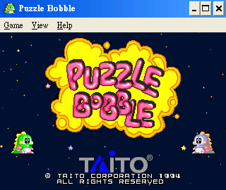
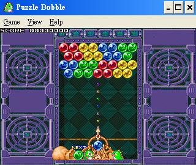

名稱：泡泡龍1／泡泡龍射波／泡泡龍99 (Puzzle Bobble／Bust-A-Move，英文版)
簡介：TAITO 1994年出品的益智解謎遊戲，1995年移植至Windows。如果玩家曾在電動遊樂場
玩過的話，應該對這款遊戲不陌生才對。遊戲係以關卡的方式進行，每一關各有不同
數目及顏色的泡泡，以各種排列方式黏在上方，玩家必須控制下邊投出泡泡的方向，
使得任何3個同顏色的泡泡相黏以便消去。當上方所有的泡泡都消去時，便算過關了。
整個遊戲簡單有趣，非常適合閒暇時拿來輕鬆一下。


備註：本版為1999版。
保護：光碟，在光碟上直接執行，破解碼（需放入光碟才有背景音樂）：
PB.EXE
75 1A C6 45 FC 00
EB -- -- -- -- --
備註：原版LOADER.EXE會被報毒，如有疑慮，可將之刪除，直接執行PB.EXE。